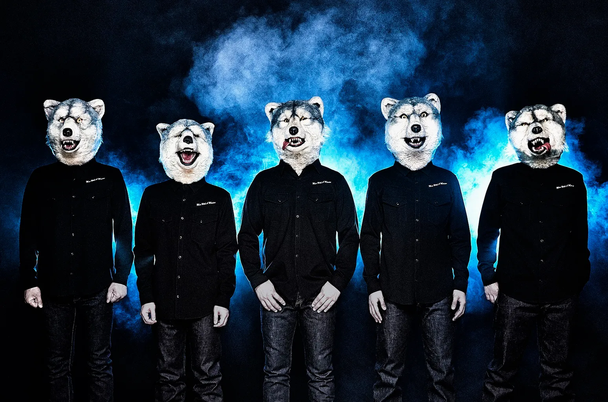

Man with a mission.
Man with a Mission estilizado como MAN WITH A MISSION o a veces MWAM, (Español: El Hombre con una Mision) es una banda japonesa del Rock alternativo formada en Shibuya, Tokio en 2010.
La banda actualmente consiste de cinco miembros, con los nombres artísticos de Tokyo Tanaka (voz), Jean-Ken Johnny (guitarra, voz, rap), Kamikaze Boy (bajo, coros), DJ Santa Monica (DJ, sampler), y Spear Rib (batería).
Crash Bandicoot es un videojuego de plataformas desarrollado por Naughty Dog y publicado por Sony Computer Entertainment para PlayStation en 1996. El jugador controla a Crash, un bandicut mejorado genéticamente creado por el científico loco Doctor Neo Cortex. La trama sigue al bandicut Crash en su intento por rescatar a su novia Tawna, y frustrar los planes del científico Neo Cortex para dominar el mundo. Si bien el título cuenta principalmente con un sistema de perspectiva en tercera persona, algunos de sus niveles muestran ya sea una vista lateral o hacia adelante.
Historia del anime
En sus inicios, la animación japonesa recibe el nombre de Senga Eiga (literalmente “películas de líneas dibujadas”), más tarde y, finalmente, sobre 1960 pasará a llamarse "Animeeshon" originalmente (アニメーション animēshon?). De ahí que se abrevie a «anime» (アニメ). Por otra parte, se cree que es una palabra de origen francés.